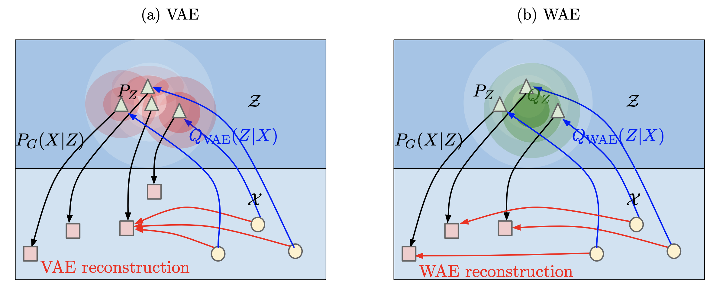
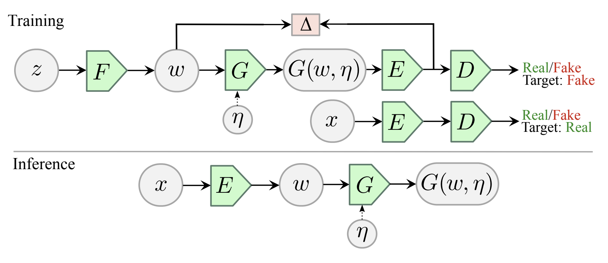
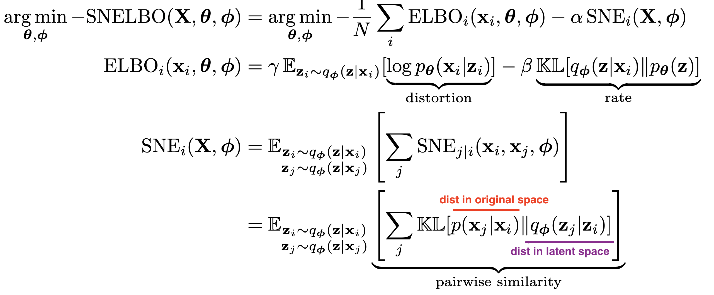
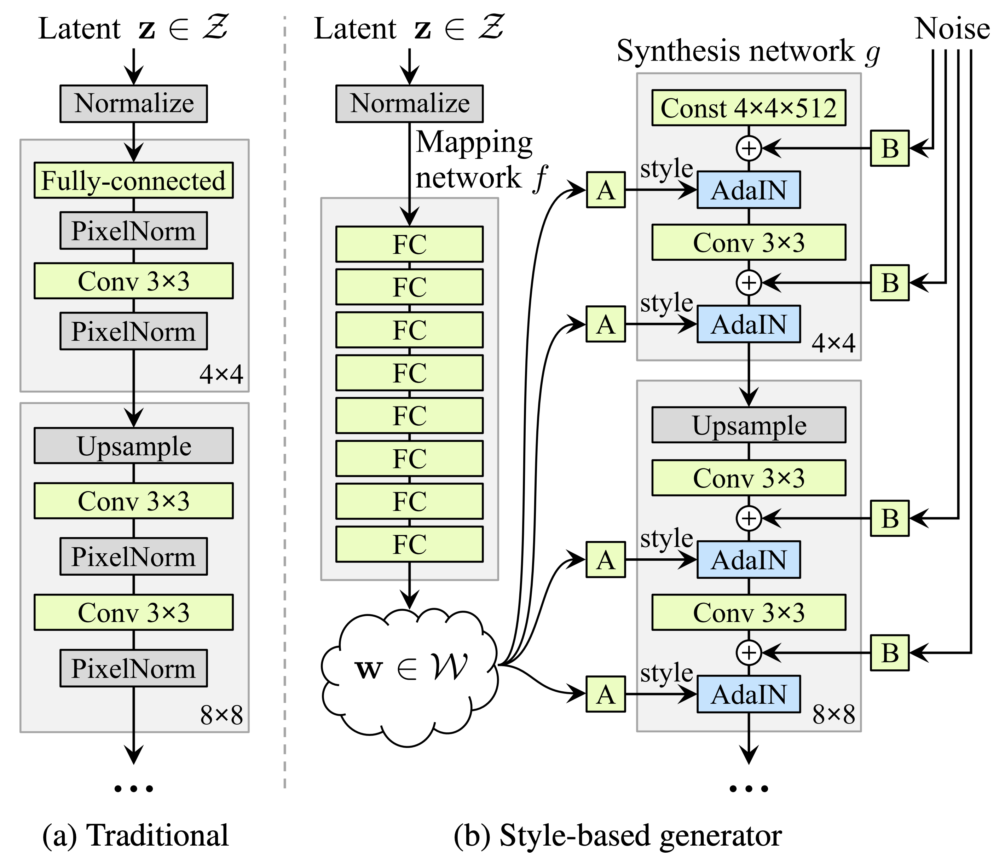
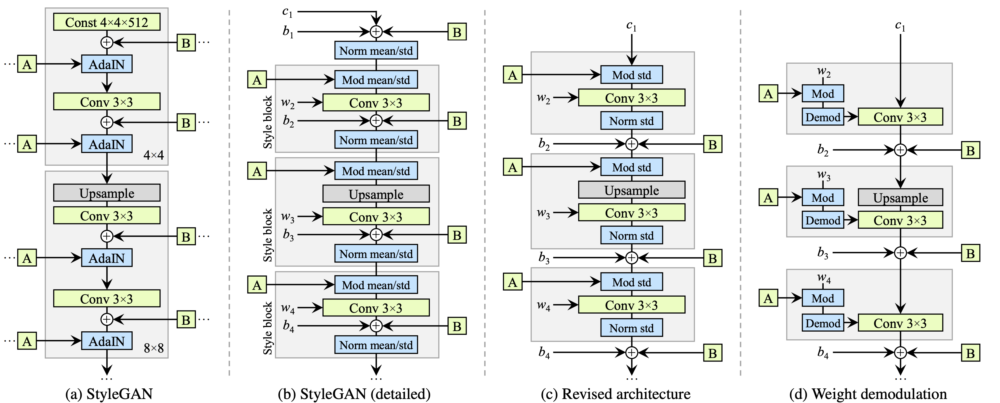
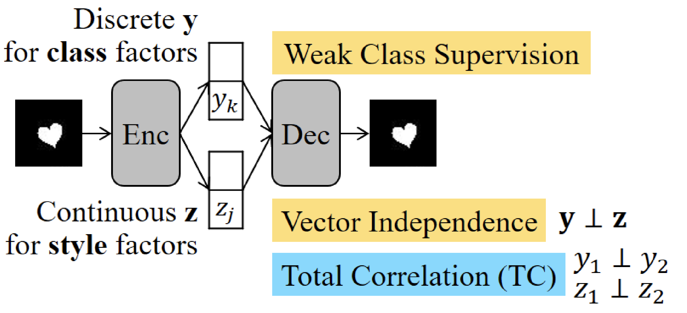
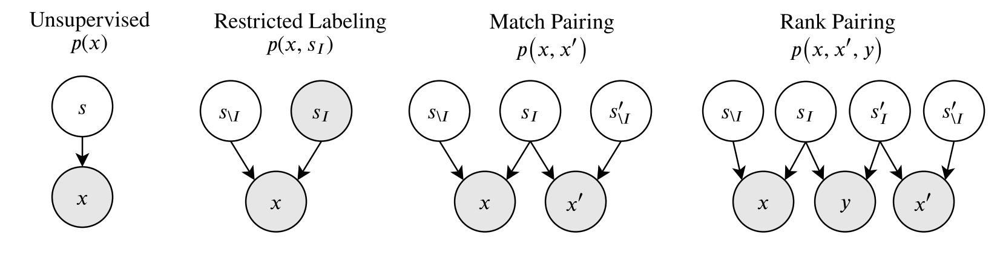

disentanglement
view markdownVAEs
Some good disentangled VAE implementations are here and more general VAE implementations are here. Tensorflow implementations available here
The goal is to obtain a nice latent representation $\mathbf z$ for our inputs $\mathbf x$. To do this, we learn parameters $\phi$ for the encoder $p_\phi( \mathbf z\vert \mathbf x)$ and $\theta$ for the decoder $q_{\mathbf \theta} ( \mathbf x\vert \mathbf z)$. We do this with the standard vae setup, whereby a code $z$ is sampled, using the output of the encoder (intro to VAEs here).
disentangled vae losses
| reconstruction loss | compactness prior loss | total correlation loss |
|---|---|---|
| encourages accurate reconstruction of the input | encourages points to be compactly placed in space | encourages latent variables to be independent |
- summarizing the losses
- reconstruction loss - measures the quality of the reconstruction, the form of the loss changes based on the assumed distribution of the likelihood of each pixel
- binary cross entropy loss - corresopnds to bernoulli distr., most common - doesn’t penalize (0.1, 0.2) and (0.4, 0.5) the same way, which might be problematic
- mse loss - gaussian distr. - tends to focus on a fex pixels that are very wrong
- l1 loss - laplace distr.
- compactness prior loss
- doesn’t use the extra injected latent noise
- tries to push all the points to the same place
- emphasises smoothness of z, using as few dimensions of z as possible, and the main axes of z to capture most of the data variability
- usually assume prior is standard normal, resulting in pushing the code means to 0 and code variance to 1
- we can again split this term $\sum_i \underbrace{\text{KL} \left(p_\phi( \mathbf z_i\vert \mathbf x):\vert\vert:prior(\mathbf z_i) \right)}{\text{compactness prior loss}} = \underbrace{\sum_i I(x; z)}{\text{mutual info}} + \underbrace{\text{KL} \left(p_\phi( \mathbf z_i):\vert\vert:prior(\mathbf z_i) \right)}_{\text{factorial prior loss}}$
- total correlation loss - encourages factors to be independent
- measures dependence between marginals of the latent vars
- intractable (requires pass through the whole dset)
- instead sample $dec_\phi(\mathbf z\vert \mathbf x)$ and create $\prod_j dec_\phi( \mathbf z_i\vert \mathbf x) $ by permuting across the batch dimension
- now, calculate the kl with the density-ratio trick - train a classifier to approximate the ratio from these terms
- reconstruction loss - measures the quality of the reconstruction, the form of the loss changes based on the assumed distribution of the likelihood of each pixel
disentangled vae in code
# Reconstruction + KL divergence losses summed over all elements and batch
def loss_function(x_reconstructed, x, mu, logvar, beta=1):
'''
Params
------
x_reconstructed: torch.Tensor
Reconstructed input, with values between 0-1
x: torch.Tensor
input, values unrestricted
'''
# reconstruction loss (assuming bernoulli distr.)
# BCE = sum_i [x_rec_i * log(x_i) + (1 - x_rec_i) * log(1-x_i)]
rec_loss = F.binary_cross_entropy(x_reconstructed, x, reduction='sum')
# compactness prior loss
# 0.5 * sum(1 + log(sigma^2) - mu^2 - sigma^2)
KLD = -0.5 * torch.sum(1 + logvar - mu.pow(2) - logvar.exp())
# total correlation loss (calculate tc-vae way)
z_sample = mu + torch.randn_like(exp(0.5 * logvar))
log_pz, log_qz, log_prod_qzi, log_q_zCx = func(z_sample, mu, logvar)
# I[z;x] = KL[q(z,x)\vert\vertq(x)q(z)] = E_x[KL[q(z\vertx)\vert\vertq(z)]]
mi_loss = (log_q_zCx - log_qz).mean()
# TC[z] = KL[q(z)\vert\vert\prod_i z_i]
tc_loss = (log_qz - log_prod_qzi).mean()
# dw_kl_loss is KL[q(z)\vert\vertp(z)] instead of usual KL[q(z\vertx)\vert\vertp(z))]
dw_kl_loss = (log_prod_qzi - log_pz).mean()
return rec_loss + beta * KLD
vaes for interpretation
- icam (bass et al. 2020) - learn disentangled repr using vae with adv loss to make repr class-relevant
- va-gan (baumgartner et al. 2018) - interpret features in GAN space
various vaes
- vae (kingma & welling, 2013)
- beta-vae (higgins et al. 2017) - add hyperparameter $\beta$ to weight the compactness prior term
- beta-vae H (burgess et al. 2018) - add parameter $C$ to control the contribution of the compactness prior term
- $\overbrace{\mathbb E_{p_\phi(\mathbf z\vert \mathbf x)}}^{\text{samples}} [ \underbrace{-\log q_{\mathbf \theta} ( \mathbf x\vert \mathbf z)}{\text{reconstruction loss}} ] + \textcolor{teal}{\beta}\; \vert\sum_i \underbrace{\text{KL} \left(p\phi( \mathbf z_i\vert \mathbf x):\vert\vert:prior(\mathbf z_i) \right)}_{\text{compactness prior loss}} -C\vert$
- C is gradually increased from zero (allowing for a larger compactness prior loss) until good quality reconstruction is achieved
- factor-vae (kim & minh 2018) - adds total correlation loss term
- computes total correlation loss term using discriminator (can we discriminate between the samples when we shuffle over the batch dimension or not?)
- beta-TC-VAE = beta-total-correlation VAE (chen et al. 2018) - same objective but computed without need for discriminator
- use minibatch-weighted sampling to compute each of the 3 terms that make up the original VAE compactness prior loss
- main idea is to better approximate $q(z)$ by weighting samples appropriately - biased, but easier to compute
- Interpretable VAEs for nonlinear group factor analysis
- Wasserstein Auto-Encoders (tolstikhin et al.) - removes the mutual info part of the loss
- wasserstein distance = earth-movers distance, how far apart are 2 distrs
- minimizes wasserstein distance + penalty which is similar to auto-encoding penalty, without the mutual info term
- another intuition: rather than map each point to a ball (since VAE adds noise to each latent repr), we only constraint the overall distr of Z, potentially making reconstructions less blurry (but potentially making latent space less smooth)

- Adversarial Latent Autoencoder (pidhorskyi et al. 2020)
- improve quality of generated VAE reconstructions by using a different setup which allows for using a GAN loss

- Variational Autoencoders Pursue PCA Directions (by Accident)
- local orthogonality of the embedding transformation
- prior $p(z)$ is standard normal, so encoder is assumed to be Gaussian with a certain mean, and diagonal covariance
- disentanglement is sensitive to rotations of the latent embeddings but reconstruction err doesn’t care
- for linear autoencoder w/ square-error as reconstruction loss, we recover PCA decomp
- Disentangling Disentanglement in Variational Autoencoders (2019)
- independence can be too simplistic, instead 2 things:
- the latent encodings of data having an appropriate level of overlap
- keeps encodings from just being a lookup table
- when encoder is unimodal, $I(x; z)$ gives us a good handle on this
- prior structure on the latents (e.g. independence, sparsity)
- the latent encodings of data having an appropriate level of overlap
- to trade these off, can penalize divergence between $q_\phi(z)$ and $p(z)$
- nonisotropic priors - isotropic priors are only good up to rotation in the latent space
- by chossing a nonisotropic prior (e.g. nonisotropic gaussian), can learn certain directions more easily
- sparse prior - can help do clustering
- independence can be too simplistic, instead 2 things:
- VAE-SNE: a deep generative model for simultaneous dimensionality reduction and clustering (graving & couzin 2020) - reduce dims + cluster without specifying number of clusters

- stochastic neighbor regularizer that optimizes pairwise similarity kernels between original and latent distrs. to strengthen local neighborhood preservation
- can use different neighbor kernels, e.g. t-SNE similarity (van der Maaten & Hinton, 2008) or Gaussian SNE kernel (Hinton & Roweis, 2003)
- perplexity annealing technique (Kobak and Berens, 2019) - decay the size of local neighborhoods during training (helps to preserve structure at multiple scales)
- Gaussian mixture prior for learning latent distr. (with very large number of clusters)
- at the end, merge clusters using a sparse watershed (see todd et al. 2017)
- extensive evaluation - test several datasets / methods and evaluate how well the first 2 dimensions preserve the following:
- global - correlation between pairwise distances in orig/latent spaces
- local - both metric (distance- or radius-based) and topological (neighbor-based) neighborhoods which are 1% of total embedding size
- fine-scale - neighborhoods which are <1% of total embedding size
- temporal info (for time-series data only) - correlation between latent and original temporal derivatives
- likelihood on out-of-sample data
- further advancements
- embed into polar coordinates (rather than Euclidean) helps a lot
- convolutional VAE-SNE - extract features from images using some pre-trained net and then run VAE-SNE on these features
- background: earlier works also used SNE objective for regularization - starts with van der Maaten 2009 (parametric t-SNE)
- future work: density-preserving versions of t-SNE, modeling hierarchical structure in vae, conditional t-SNE kernel
- A Survey of Inductive Biases for Factorial Representation-Learning (ridgeway 2016)
- desiderata
- compact
- faithful - preserve info required for task
- explicitly represent the attributes required for the task at hand
- interpretable by humans
- factorial representation - attributes are statistically independent and can provide a userful bias for learning
- “compete” - factors are more orthogonal
- “cooperate” - factors are more similar
- bias on distribution of factors
- PCA - minimize reconstruction err. subject to orthogonal weights
- ICA - maximize non-Gaussianity (can also have sparse ICA)
- bias on factors being invariant to certain types of changes
- ISA (independent subspace analysis) - 2 layer model where first layer is linear, 2nd layer pools first layer (not maxpool, more like avgpool), sparsity at second layer
- i.e. 1st layer cooperates, 2nd layer competes
- VQ - vector quantizer - like ISA but first layer filters now compete and 2nd layer cooperates
- SOM - encourages topographic map by enforcing nearby filters to be similar
- ISA (independent subspace analysis) - 2 layer model where first layer is linear, 2nd layer pools first layer (not maxpool, more like avgpool), sparsity at second layer
- bias in how factors are combined
- linear combination - PCA/ICA
- multilinear models - multiplicative interactions between factors (e.g on top of ISA)
- functional parts - factor components are combined to construct the output
- ex. NMF - parts can only add, not substract to total output
- ex. have each pixel in the output be represented by only one factor in a VQ
- hierarchical layers
- ex. R-ICA - recursive ICA - run ICA on coefficients from previous layer (after some transformation)
- supervision bias
- constraints on some examples
- e.g. some groups have same value for a factor
- e.g. some examples have similar distances (basis for MDS = multidimensional scaling)
- e.g. analogies between examples
- can do all of these things with auto-encoders
- constraints on some examples
- desiderata
- more papers
- infoVAE
- dipVAE
- vq-vae - latent var is discrete, prior is learned
- Learning Disentangled Representations with Semi-Supervised Deep Generative Models
- specify graph structure for some of the vars and learn the rest
GANs
model-based (disentangle during training)
- disentangling architectures
- InfoGAN: Interpretable Representation Learning by Information Maximizing Generative Adversarial Nets (chen et al. 2016)
- encourages $I(x; c)$ to be high for a subset of the latent variables $z$
- slightly different than vae - defined under the distribution $p(c) p(x\vert c)$ whereas vae uses $p_{data}(x)enc(z\vert x)$
- mutual info is intractable so optimizes a lower bound
- encourages $I(x; c)$ to be high for a subset of the latent variables $z$
- Stylegan (karras et al. 2018)
- introduced perceptual path length and linear separability to measure the disentanglement property of latent space

- Stylegan2 (karras et al. 2019):

- $\psi$ scales the deviation of w from the average - $\psi=1$ is original, moving towards 0 improves quality but reduces variety
- also has jacobian penalty on mapping from style space $w$ to output image $y$
- InfoGAN: Interpretable Representation Learning by Information Maximizing Generative Adversarial Nets (chen et al. 2016)
- DNA-GAN: Learning Disentangled Representations from Multi-Attribute Images
- Clustering by Directly Disentangling Latent Space - clustering in the latent space of a gan
- Semi-Supervised StyleGAN for Disentanglement Learning - further improvements on StyleGAN using labels in the training data
- The Hessian Penalty: A Weak Prior for Unsupervised Disentanglement (peebles et al. 2020)
- if we perturb a single component of a network’s input, then we would like the change in the output to be independent of the other input components
- minimize off-diagonal entries of Hessian matrix (can be obtained with finite differences)
- smoother + more disentangled + shrinkage in latent space
- Hessian penalty is for a scalar - they define penalty as max penalty over Hessian over all pixels in the generator
- unbiased stochastic estimator for the Hessian penalty (Hutchinson estimator)
- they apply this penalty with $z$ as input, but different intermediate activations as output
post-hoc (disentangle after training)
- mapping latent space
- InterFaceGAN: Interpreting the Disentangled Face Representation Learned by GANs (shen et al. 2020)
- Interpreting the Latent Space of GANs for Semantic Face Editing (shen et al. 2020)
- find latent directions for each binary attribute, as directions which separate the classes using linear svm
- validation accuracies in tab 1 are high…much higher for all data (because they have high confidence level on attribute scores maybe) - for PGGAN but not StyleGAN
- intro of this paper gives good survey of how people have studied GAN latent space
- few papers posthoc analyze learned latent repr.
- find latent directions for each binary attribute, as directions which separate the classes using linear svm
- On the “steerability” of generative adversarial networks (jahanian et al. 2020)
- learn to approximate edits to images, such as zooms
- linear walk is as effective as more complex non-linear walks for learning this
- nonlinear setting - learn a neural network which applies a small perturbation in a specific direction (e.g. zooming)
- to move further in this space, repeatedly apply the function
- learn to approximate edits to images, such as zooms
- A Disentangling Invertible Interpretation Network for Explaining Latent Representations (esser et al. 2020) - map latent space to interpretable space, with invertible neural network
- interpretable space factorizes, so is disentangled
- individual concepts (e.g. color) can use multiple interpretable latent dims
- instead of user-supplied interpretable concepts, user supplies two sketches which demonstrate a change in a concept - these sketches are used w/ style transfer to create data points which describe the concept
- alternatively, with no user-supplied concepts, try to get independent components in unsupervised way
- Disentangling in Latent Space by Harnessing a Pretrained Generator (nitzan et al. 2020)
- learn to map attributes onto latent space of stylegan
- works using two images at a time and 2 encoders
- for each image, predict attributes + identity, then mix the attributes
- results look realy good, but can’t vary one attribute at a time (have to transfer all attributes from the new image)
- ELEGANT: Exchanging Latent Encodings with GAN for Transferring Multiple Face Attributes (xiao et al. 2018)
- trains 2 images at a time - swap an attribute that differs between the images and reconstruct images that have the transferred attribute
- bias
- Towards causal benchmarking of bias in computer vision algorithms (balakrishnan et al. 2020) - use human annotations to disentangle latent space
- synthesis approach can alter multiple attributes at a time to produce grid-like matched samples of images we call transects
- find directions + orthogonalize same as shen et al. 2020
- Detecting Bias with Generative Counterfactual Face Attribute Augmentation (denton et al. 2019) - identify latent dims by training a classifier in the latent space on groundtruth attributes of the training images
- Explaining Classifiers with Causal Concept Effect (CaCE) (goyal et al. 2020) - use vae to disentangle / alter concepts to probe classifier
- Towards causal benchmarking of bias in computer vision algorithms (balakrishnan et al. 2020) - use human annotations to disentangle latent space
- post-hoc
- Explanation by Progressive Exaggeration (singla et al. 2019)
- progressively change image to negate the prediction, keeping most features fixed
- want to learn mapping $I(x, \delta)$ which produces realistic image that changes features by $\delta$
- 3 losses: data consistency (perturbed samples should look real), prediction changes (perturbed samples should appropriately alter prediction), self-consistency (applying reverse perturbatino should bring x back to original, and $\delta=0$ should return identity)
- moving finds ways to generate images that do change the wanted attribute (and don’t change the others too much)
- minor
- used human experiments
- limited to binary classification
- progressively change image to negate the prediction, keeping most features fixed
-
Interpreting Deep Visual Representations via Network Dissection (zhou et al. 2017)
- obtain image attributes for each z (using classifier, not human labels)
- this classifier may put bias back in
- to find directions representing an attribute, train a linear model to predict it from z
- obtain image attributes for each z (using classifier, not human labels)
- GAN Dissection: Visualizing and Understanding Generative Adversarial Networks (bau et al. 2018) - identify group of interpretable units based on segmentation of training images
- find directions which allow for altering the attributes
- GANSpace: Discovering Interpretable GAN Controls - use PCA in the latent space (w for styleGAN, activation-space at a specific layer for BigGAN) to select directions
- Editing in Style: Uncovering the Local Semantics of GANs (collins et al. 2020) - use k-means on gan activations to find meaningful clusters (with quick human annotation)
- add style transfer using target/source image
- Unsupervised Discovery of Interpretable Directions in the GAN Latent Space - loss function which tries to recover random shifts made to the latent space
- Explanation by Progressive Exaggeration (singla et al. 2019)
misc
- Learning Diverse and Discriminative Representations via the Principle of Maximal Coding Rate Reduction (yu, …, & ma, 2020)
- goal: learn low-dimensional structure from high-dim (labeled or unlabeled) data
- approach: instead of cross-entropy loss, use maximal coding rate reduction = MCR loss function to learn linear feature space where:
- inter-class discriminative - features of samples from different classes/clusters are uncorrelated + different low-dim linear subspaces
- intra-class compressible - features of samples from same class/cluster are correlated (i.e. belong to low-dim linear subspace)
- maximally diverse - dimension (or variance) of features for each class/cluster should be as large as possible as long as uncorrelated from other classes/clusters
- related to nonlinear generalized PCA
- given random variable $z$ and precision $\epsilon$, rate distortion $R(z, \epsilon)$ is minimal number of bits to encode $z$ such that expected decoding err is less than $\epsilon$
- can compute from finite samples
- can compute for each class (diagonal matrices represent class/cluster membership in loss function)
- MCR maximizes (rate distortion for all features) - (rate distortion for all data separated into classes)
- like a generalization of information gain
- evaluation
- with label corruption performs better
- Learned Equivariant Rendering without Transformation Supervision - separate foreground / background using video
(semi)-supervised disentanglement
these papers use some form of supervision for the latent space when disentangling
- Semi-supervised Disentanglement with Independent Vector Variational Autoencoders

- Learning Disentangled Representations with Semi-Supervised Deep Generative Models - put priors on interpretable variables during training and learn the rest
- Weakly Supervised Disentanglement with Guarantees
- prove results on disentanglement for rank pairing
- different types of available supervision

- restricted labeling - given labels for some groundtruth factors (e.g. label “glasses”, “gender” for all images)
- match pairing - given pairs or groups (e.g. these images all have glasses)
- rank pairing - label whether a feature is greater than another (e.g. this image has darker skin tone than this one)
- Weakly Supervised Disentanglement by Pairwise Similarities - use pairwise supervision
evaluating disentanglement
- Challenging Common Assumptions in the Unsupervised Learning of Disentangled Representations (locatello et al. 2019)
- state of disentanglement is very poor…depends a lot on architecture/hyperparameters
- good way to evaluate: make explicit inductive biases, investigate benefits of this disentanglement
- defining disentanglement - compact, interpretable, independent, helpful for downstream tasks, causal inference
- a change in one factor of variation should lead to a change in a single factor in the learned repr.
- unsupervised learning of disentangled reprs. is impossible without inductive biases
- note - vae’s come with reconstruction loss + compactness prior loss which can be looked at on their own
-
data
- dsprites dataset has known latent factors we try to recover
- beta-vae disentanglement metric score = higgins metric - see if we can capture known disentangled repr. using pairs of things where only one thing changes
- start with a known generative model that has an observed set of independent and interpretable factors (e.g. scale, color, etc.) that can be used to simulate data.
- create a dataset comprised of pairs of generated data for which a single factor is held constant (e.g. a pair of images which have objects with the same color).
- use the inference network to map each pair of images to a pair of latent variables.
- train a linear classifier to predict which interpretable factor was held constant based on the latent representations. The accuracy of this predictor is the disentanglement metric score.
- Evaluating Disentangled Representations (sepliarskaia et al. 2019)
- defn 1 (Higgins et al., 2017; Kim and Mnih, 2018; Eastwood and Williams, 2018) = factorVAE metric: A disentangled representation is a representation where a change in one latent dimension corresponds to a change in one generative factor while being relatively invariant to changes in other generative factors.
- defn 2 (Locatello et al., 2018; Kumar et al., 2017): A disentangled representation is a representation where a change in a single generative factor leads to a change in a single factor in the learned representation.
- metrics
- DCI: Eastwood and Williams (2018) - informativeness based on predicting gt factors using latent factors
- SAP: Kumar et al. (2017) - how much does top latent factor match gt more than 2nd latent factor
- mutual info gap MIG: Chen et al. 2018 - mutual info to compute the same thing
- modularity (ridgeway & mozer, 2018) - if each dimension of r(x) depends on at most a factor of variation using their mutual info
non-deep methods
- unifying vae and nonlinear ica (khemakhem et al. 2020)
- ICA
- maximize non-gaussianity of $z$ - use kurtosis, negentropy
- minimize mutual info between components of $z$ - use KL, max entropyd
- ICA